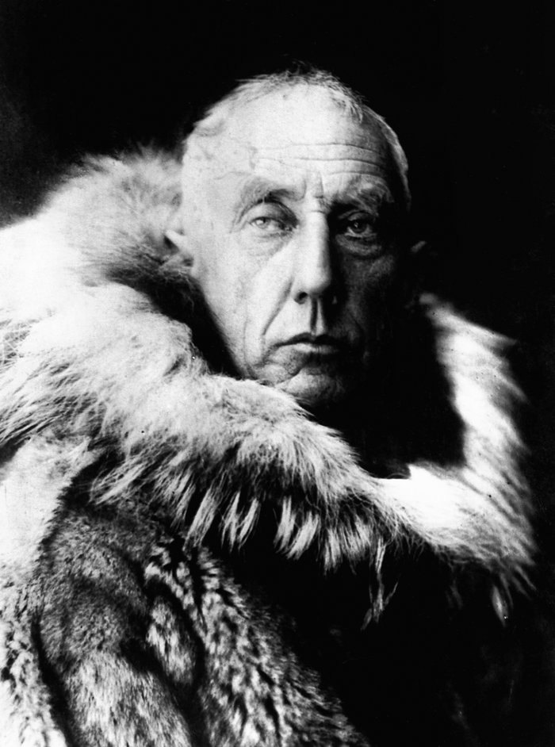

THE WAY THROUGH
He found the way through everything — the Northwest Passage, the South Pole, the Northeast Passage — except the way home. Now he walks one last first passage: through whatever lies beyond the final map.

THE WAY THROUGH
He found the way through everything — the Northwest Passage, the South Pole, the Northeast Passage — except the way home. Now he walks one last first passage: through whatever lies beyond the final map.
Feature map
Level-by-level features, as the figure refined them.
Read the Ice
Action · 1 CE.
Tier IV · Route support · Suggested CE ability: WIS · Primary verb: Read. Route-craft, perfected. Amundsen reads terrain, weather, and ground the way other men read charts — completely. He finds the way through any terrain, any barrier short of a Domain, and his parties walk it unambushed. Trail-Marked. As Amundsen moves, he leaves trail-marks (cairns, cuts, knots — no action). Willing creatures that follow his marks (staying within 10 ft of his path) count as traveling with him for all his features. Marks last 24 hours.
Amundsen reads the terrain and weather within 1 mile: he learns all hazards (natural and placed — pitfalls, unstable ice, ambush ground), the safest line of travel, and what the weather was yesterday (hence what it will likely be tomorrow — reading, not prophecy). He cannot be lost while this reading is fresh (1 hour). (The ice rewards the prepared.)
Trail-Marked Passage
Passive.
Amundsen and willing creatures following his trail-marks ignore difficult terrain caused by natural environment (ice, snow, rubble, undergrowth — not magical terrain), and cannot be surprised by ambush while traveling — he reads the ground too completely for the text to lie. (Complete present-reading, not foresight: this covers travel only, never the opening round of a fight already joined. Single file behind the markers.)
The Way Through
Action · 3 CE · 1 hour.
For the duration, Amundsen's traveling party (up to 12 willing creatures following his marks) ignores all difficult terrain, cannot be ambushed (enemies cannot gain surprise against the party while it moves), and leaves no usable trail — Survival checks to track the party automatically fail. (The party reads as one text.)
Depot
1-hour ritual · 2 CE.
Amundsen lays a depot — cached supplies, correctly placed. Up to 6 creatures taking a short rest at the depot recover an extra 1d8 hit points and may remove one level of exhaustion. The depot persists 7 days. (Supplies laid like a ledger.)
First Passage
Action · 5 CE.
Amundsen opens a corridor — 10 ft wide, 60 ft long — through any barrier short of a Domain: walls, magical wards and barriers of 5th level or lower, triggered spaces, whiteouts. The corridor lasts 1 minute; those who walk it are unaffected by the barrier. Domain barriers and 6th-level+ workings are decisions, not terrain — the route stops at their edge. (The route does not ask permission.)
No One Left on the Ice
Reaction · 4 CE.
When a willing creature Amundsen can see within 60 ft drops to 0 hit points, the route carries them: they are moved up to 30 ft to an unoccupied space of Amundsen's choice (no opportunity attacks) and stabilized. Once per round. (He has never left a man.)
Maximum, Domain, or equivalent.
Capstone material.
Maximum: THE POLE IS A PLACE YOU WALK TO
The route, perfected: Amundsen and up to 8 willing creatures travel at double speed, ignore all difficult terrain and all environmental damage from cold and weather, and cannot be intercepted — pursuers cannot close, cut off, or ambush them for the duration (not teleportation; simply uncatchable). (Already gone.)
The Northwest Passage
Three winters of ice, the Gjøa frozen in, trail-markers to the horizon. Inside this domain, the sure-hit is The Trail Holds — each ally inside may move up to their speed along Amundsen's trail as a free action once per round, passing through hostile spaces without provoking opportunity attacks. Hostile creatures inside treat all terrain as difficult and cannot make opportunity attacks against creatures moving along the trail. (Inside the Passage, his people move. Everyone else wades.)
- Clash points
- 800
- Burnout
- 5 rounds
- Duration
- 2 minutes
- Radius
- 50-ft radius
- Activation ✦
- full-turn action
- CE cost ✦
- 20
✦ Canon: figure Domains are Specific Domains — the stated profile governs, not the player point-unlock table.
The Last Flight
Amundsen commits to a route that does not exist yet: naming a place he has read about (studied in charts, journals, or his own Read the Ice), he and up to 8 willing creatures travel there over the course of 1 minute — up to 500 miles, over any terrain, uninterceptable, unambushable. They arrive together, provisioned, trail-marked. Once committed, he cannot turn back mid-route (his vow holds). (First passage, always.)
Build-defining options.
This technique grants Innate Technique Feats — hand-authored applications of the figure's art, available in the builder's feat picker when you select this technique.
Edge cases and shared systems.
Campaign canon notes